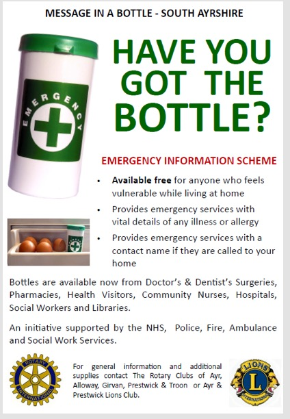
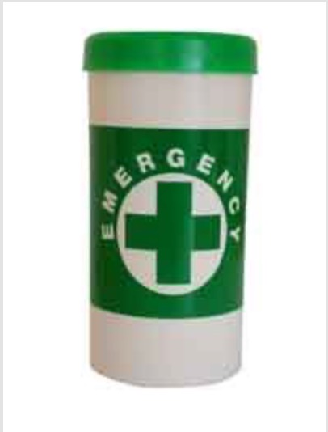

Message in a Bottle

The Message in a Bottle initiative is an emergency information scheme that is provided free of charge by the Rotary Clubs of Alloway, Ayr, Girvan, Prestwick and Troon, and the Ayr and Prestwick Lions Club.
The scheme is fully supported by the new South Ayrshire Health and Social Care Partnership together with key partners such as the Community Safety Partnership, Police Scotland, Scottish Fire and Rescue, Scottish Ambulance Service and Voluntary Action South Ayrshire.
Message in a Bottle is aimed at anyone who feels vulnerable at home. This will usually be elderly people but can be people of any age. Rotary and Lions supply bottle packs to GP surgeries, dental surgeries, community pharmacies, community nurses, health visitors, hospitals and social workers.

The bottle pack gives the user the means to alert the emergency services to important medical information and contact details, should an accident or sudden illness in their home occur.
The fridge has been chosen to store the bottles as 95% of all households have one and it is generally easy to find. Also, the insulation properties and construction of a fridge mean that in the event of a fire, the contents of the fridge usually survive.
The bottle pack consists of:
- A bottle
- A basic medical information form
- Green and white emergency data link stickers, which are unique to the scheme
The form with all of the relevant medical information is put in the bottle, which is then placed in the fridge. One of the stickers is put just inside the front door, so that it is clearly visible to any of the emergency services, and one of the stickers goes on the outside of the fridge door. The green and white stickers are recognised by the emergency services.
If help is needed in filling out the information details, a family member, carer, a trusted friend or any link health or social care worker can assist in its completion.
People shouldn't put a sticker on the exterior of their property. The emergency services will know to look for one inside the front door.
If more than one person in the household has a bottle it can make clear which it applies to by labelling it for example, Mr or Mrs.